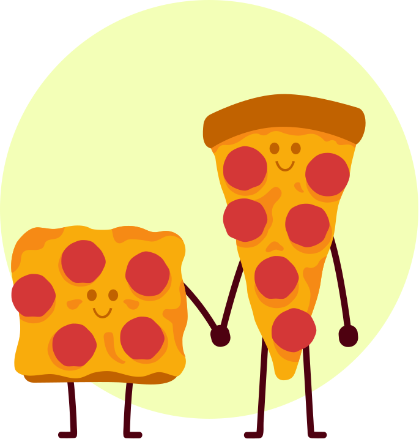
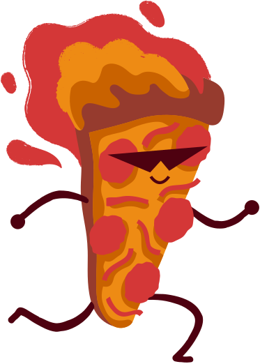
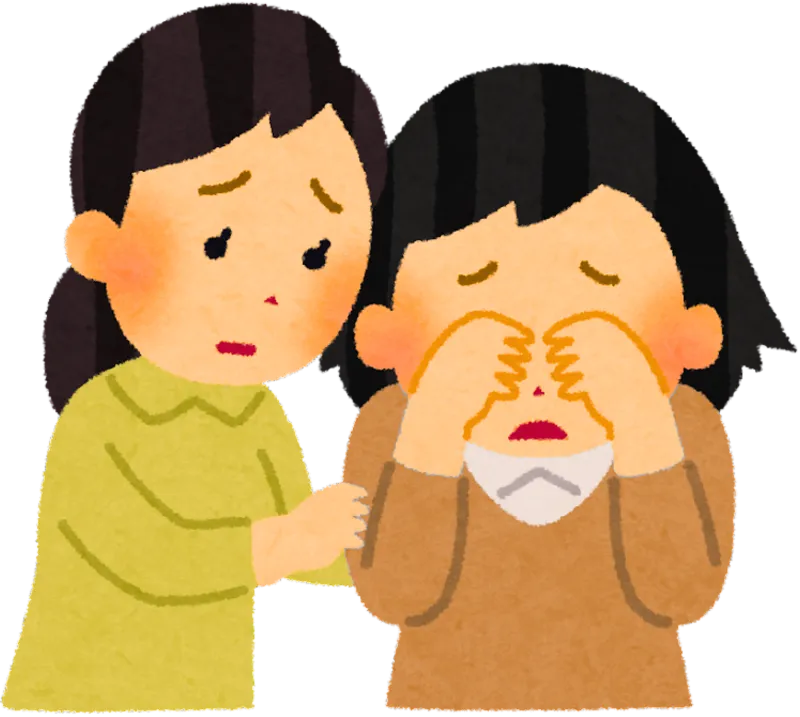
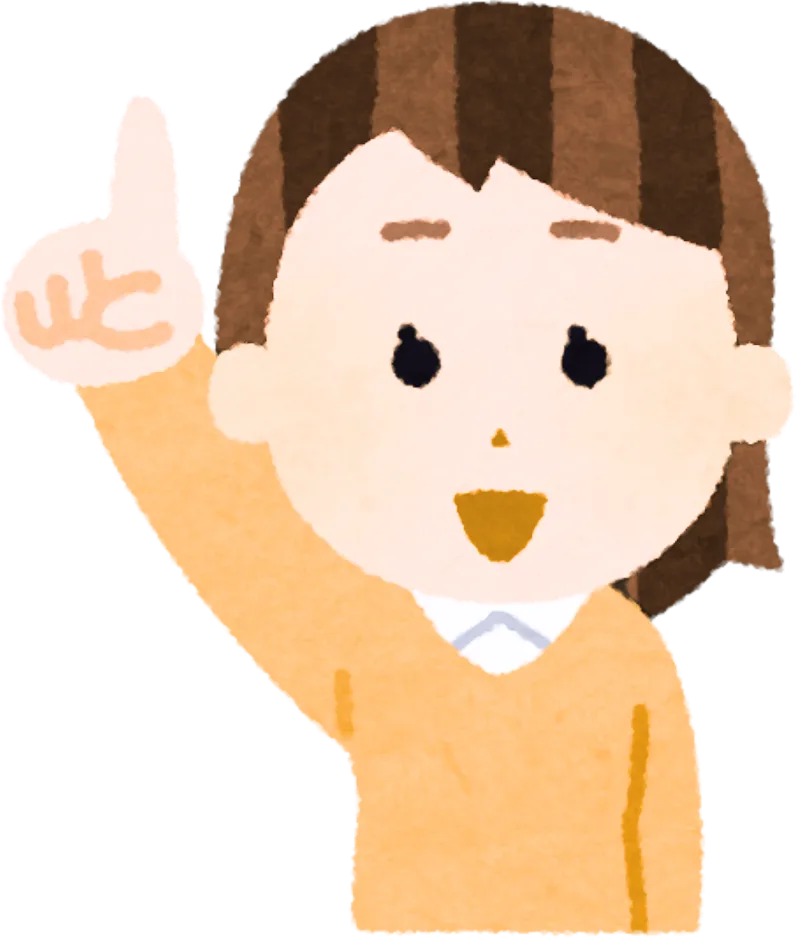

Building a Support Network
Credits: Adam Yu, BMLSc, MSc; Kevin Li BSc MSPH
Dr. Marlene Dytoc MD PhD FRCPC
Designed by: Danting Zheng BSc Undergraduate


What We'll Discover About Support
By the end of our time together, you'll be able to:
Eczema Affects More Than Just Skin
Living with eczema presents unique challenges. You/your child might:
- Feel frustrated, overwhelmed, or self-conscious.
- Avoid social events, feel hesitant in relationships, or struggle with how to explain your condition to others.
- Have issues with concentration, productivity, or hobbies.
- Experience poor self-esteem and body image.
Remember, you're not alone in this. This module is about finding the support you all deserve.

Mental Health & Eczema: When to Get Extra Help
It's Normal to Feel
- Embarrassed about your skin
- Stressed about managing treatment
- Sad or anxious during flare-ups
When to Get Help
- Feeling down most days
- Avoiding friends or school
- Trouble sleeping or eating
- Feeling hopeless
- Struggling to stick with treatment, or feeling overwhelmed as a caregiver
If you need to talk to someone now — AHS Mental Health Helpline
Free, confidential support, 24/7. Your GP or dermatologist can also be a good first point of contact for referrals.
Thinking it Through
Question 1 of 5Talking to Your Doctor About Feelings
Your doctors need the full picture to help you/your child best. What you/your child can say:
- “This flare-up is really getting me down.”
- “I'm stressed and not sleeping well.”
- “Can I talk to someone about how I'm feeling?”
This helps your doctor support your whole health.
Who Can Be Part of Your Support Team?
A good support team might include:
- Dermatologist or family doctor
- Mental health counselor or therapist
- Parents or guardians
- Siblings and friends
- Teachers or school staff
- Online eczema communities & peers in group programs
Building Support at Home & School
At Home
- Let your family know how they can help
- Ask for support with managing your condition, like remembering treatments or avoiding triggers
At School or Work
- Talk to a teacher or boss about your condition
- Ask for help with triggers (e.g. replacing harsh soaps in bathrooms)
- Report bullying or teasing

Handling Stigma & Boosting Confidence
Sometimes people don't understand eczema. You/your child might be teased, feel embarrassed or “different,” or try to hide their skin. What helps:
- Practice kind self-talk: “I'm more than my skin.”
- Educate others (if you choose) — sharing factual information can dispel misconceptions.
- Talk to an adult if bullied.
- Join groups where you feel understood.
Programs that encourage sharing stories can reduce isolation and boost confidence.

Thinking it Through
Question 2 of 5Thinking it Through
Question 3 of 5Helping Your Child Cope
For parents and caregivers:
- Encourage kids to talk about their feelings
- Use calm-down tools (deep breaths, drawing, breaks)
- Praise their courage and effort
- Help them practice responses to curious questions
Thinking it Through
Question 4 of 5Where to Find Support
In-person help:
- Ask your doctor for a counselor or support group
- Many hospitals have patient support services
Online resources:
- Eczema Society of Canada — eczemahelp.ca
- National Eczema Association — nationaleczema.org
- MyEczemaTeam — peer support online
- KidsHealth.org — tools for youth and parents